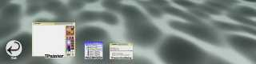
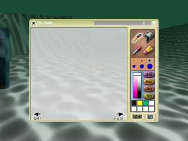
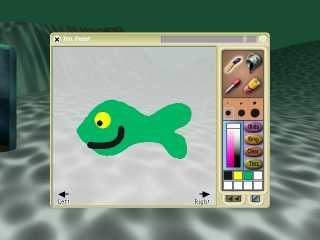
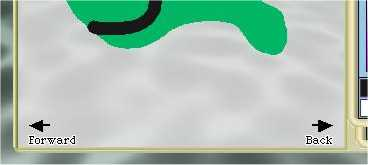

How to make your own fish
Hi! Welcome to the tutorial on how to make your own fish. In this tutorial you will learn how to use the painter tool to create cool 3D objects by just drawing them. So let's get started!
Finding the painter tool
The painter tool is located in the "dock" at the bottom of Croquet. It will show up you move your mouse there and looks like this

Now click on the "tools" section,

and then click on tool named "TPainter". A window will show up like this

How to paint your fish
Painting is really straightforward - just use the tools in upper right section to draw, fill, or erase and use the appropriate brush size. When you are done with painting it may look like this:

IMPORTANT: The painter doesn't know which way you have drawn your image. You might have drawn it heading left (such as I did) or you might have drawn it pointing right, or even up or down. So we have to tell the painter which way is forward.
Telling which way is forward
See the two arrows to the lower left and right of your drawing?! They probably still say "left" and "right" - but since my fish is heading left I need this arrow to say "forward". So click on the arrows until they have the correct words on it, e.g.,

Now we're almost done. All that remains is to press the "Keep" button and voila! What a beautiful fish we got.

As you see, drawing some fish is really simple. You can draw lots of objects using the painter (though some work better than others as you may find out for yourself) so give it a try!
And this is the end of the tutorial.